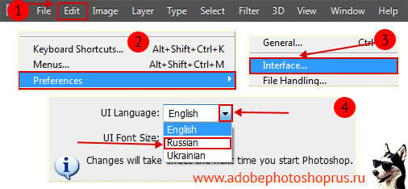

Есть возможность бесплатно скачать Photoshop CS6 официальную версию, и потом произвести активацию, в итоге вы получите редактор с полной бесплатной лицензией. Автоматизированное средство для создания композиций максимально высокого качества. Управляйте, расширяйте и изменяйте фотографии с помощью новой версии программы!

Абсолютно бесплатный Фотошоп cs6
Все совершенно бесплатно вам не придется отправлять смс и регистрироваться, не обязательно но будет приятно если вы поставите 5 пальцев вверх рейтинга или же поделитесь страницей нажав на кнопку социальных сетей. Сборки программы могут быть разные но неизменно одно это версия cs6, выбирайте для тех целей которые нужны вам, если вы намерены установить Фотошоп для цели зарабатывать на своих работах то выбирайте официальную версию, чтобы в дальнейшем купить официальную лицензию и получать необходимые обновления, если же цель научится работать то подойдет и активированная. Хотя в любом случае можно получить и официальную версию бесплатно.
Не секрет, что Фотошоп – самый популярный редактор изображений, всегда был таковым и, скорее всего, останется. При виде какого-либо фото творчества, например, демотиватора, говорят о произведении именно Фотошопа, хотя программ редактирования существует множество. Просто название любимого редактора стало именем нарицательным и часто применяется к любым случаям обработки фото или картинок, что само по себе демонстрирует популярность этой программы. Отдавая предпочтение Фотошопу, можно быть уверенным, что выбран надежный, оцененный многими софт.
Adobe Photoshop – это мощный редактор графики с многолетней историей, выпускаемый компанией AdobeSystem.
Предназначение программы Photoshop cs6 на русском
Благодаря новой версии такого обеспечения вы легко и быстро можете не только выделять и изменять даже самые сложные детали картинки (к примеру, волосы или мелкие элементы одежды), но и маскировать либо удалять компоненты фото, мгновенно заполняя пустую область подходящим цветом или изображением.
Фотошоп – одна из самых известных программ для редактирования изображений, функциональность которой просто поражает. Она будет полезна в работе как не опытному, так и профессиональному дизайнеру. Высокоэффективный инструментарий позволяет выполнять множество разнообразных задач. В отличие от предыдущей, данная версия содержит такие новые возможности: масштабирование с учетом содержимого, а также улучшение его функциональности, поворот рабочей области в одно касание, автовыравнивание и авто наложение, новые корректирующие палитры.
Как установить русский язык в Фотошоп cs6:
Если у вас проблема после установки с русским языком то выполните следующее см. картинку. Путь таков Edit->Preferences->Interface-> Блок «text Language» смените на русский потом нажмите «OK» и после этого перезапустите Фотошоп, язык будет русский. Если данным способом не получится перевести, переустановите программу, и внимательно смотрите на процесс установки в одном из шагов будет предложено выбрать желаемый язык.

Внимание! Если вы не уверены что сможете установить скачанный Фотошоп самостоятельно или не знаете как устанавливать, то перейдите к подробной инструкции ниже! (установка имеет свои особенности)
Если у вас версия OS Windows 8 и выше, то вам желательно скачать бесплатно Photoshop CC, это более свежая версия программы, но и классика не стареет и cs6 актуален как и всегда.
Установка Фотошопа имеет ряд не стандартных действий при установке, стоит следовать инструкции которую вы найдете по ссылке ниже (имеются скриншоты). Связанна такая установка с тем что компания выпустила новую версию редактора и cs6 теперь приходится скачивать таким способом.
1) Как установить Фотошоп CS6 (подробная инструкция).
2) Как бесплатно активировать Фотошоп CS6 (подробная инструкция).
Скачать Photoshop cs6:
- Update 16/09/2021
- OS (Windows 10 / 8 / 7 / XP)
- Версии продукта x32 — x64 (в одном файле)
Скачать бесплатно Фотошоп CS6
Размер файла: 1.13 Гбcкачать .torrent файл ↓
Размер файла: 1.13 Гб
После правильной установки, по инструкции, последует активация, внимательно прочтите и тогда ваши труды не пройдут даром!
| Файл Amtlib.dll для CS6 x32 | Файл Amtlib.dll для CS6 x64 |
 |
Примечания по установке Photoshop cs6
1. На все время установки будет отключен интернет (вынужденная мера), если интернет не отключился после инициализации программы отключите сами, иначе не получится установить, после установки интернет включится автоматически.
2. Программа предложит 2 выбора установки Photoshop cs6, первый это установка «Пробной версии» и второй с помощью ввода «Серийного ключа», оба варианта одинаковы и лишь установят программу на ПК после установки вам нужно будет все равно активировать программу перенеся файл в папку установки.
3. Если вы хотите установить используя серийный номер, возьмите его ниже, убедитесь что в это время интернет отключен, и не забудьте после активировать по инструкции.
1330-1840-5593-0944-7369-9908
На винде 11 работает?
вроде работает, с интернетом ловко придумали, я сначала даже не понял
указанный серийный № не проходит
все таки установился
серийный номер рассчитан только на установку, работает с выключенным интернетом, смотрите инструкцию по активации!
На Винду 10 установилось без проблем
Мужики, благодарю за Ваш Труд и Ваш профессионализм !!! Всё получилось !!! Всем рекомендую, так как я сам и мой приятель работаем на установленных таким способом программах !!!
Офигеть! Чувствую себя хакером!!! Спасибо за инструкцию!
БдаБдаБда нелайк однозначно мне пись приросовали пи*дец
у миня маска у миня маска а у миня маска разрядиоаасбь
Ах ты гадость даб даб даб асу асу асу аааааа
непонел тебе въыбать?
ваш саит просто крутой сайт чем сайт фотошопа продолжаёте в том же духе и админы
Здравствуйте. На экран 4к не подскажете какой фотошоп нужен? Скачала с торрента, значки очень мелкие , ничего не видно. А вот Иллюстратор нормально открывается без уменьшений.
вероятно последнюю версию СС 2021
У меня виндовс 10, похоже майки специально сделали программу которая в виндовс , и я не могу скачать ничего пиратского не фотошоп не что то еще , но премьер скачался
windows 10 — лицензия. Обновления последние.
Установился и активировался без проблем.
Спасибо.
хай ю хай !!! возможно выдео не будет неделю так как у меня сломалась камера!!!
ты фейк
Ты шо? детей за дэблов держишь? все знают что у Вани сердце разбито и он не может снимать видео! так как марьяна его бросила а ты говоришь «видео неделю не будет»да их год нет! так что завязывайте со своими дэбилными шутками и фейками!!! да ещё и неправильно пишешь
На MacOS можно? Или только на Windows?
виндовс только
Моё сердце радуется,качайте.
Научи пользоваться, а то чего тебя проста так радовать — та, а?
Видио посмотри !!!
Раскрыть архив комментариев (вопросы-ответы)
У меня на планшет BlackBerry не скачивается что делать, а так хочется
если у тебя винда а планшет то скачает а если андроид то в плей маркете есть приложение Abode Photoshop Touch но она на моем планшете чуть подвисает
Обязательно на оба разряда устанавливать ?
нет
Вот блин, а у меня места на планшете нету а игры удалять жалко:(
Эм это для пк
У тебя выбор — фигней страдаешь или чем-то толковым занимаешься
Отличный сайт, норм софт, скачался нормально, установился. Работает стабильно, порадовали.
Здравствуйте. Очень нужно быстро научиться работать и создать дизайн сайта. С помощью этой версии я смогу это сделать?
А ты можешь дать ссылку на скачивания RawConverter?
супер музыка, подскажите исполнительницу плиз
писалось уже
Red Lips feat. Sam Bruno?,вроде
на 10 винду установится?
да
СКАЧАЛ ЭТО НЕ ПОДДЕЛЬНЫЙ КОМЕНТ !!!!! Все норм . Видите мой камент не похож на поддельный
норм так я кинул фотку алы Пугачёвой и превратил иё в г*вно
Тебе только для этого нужен фотошоп?
надо же кого-то за*рать!
Скажите пожалуйста, а на Мас (ОS Капитан) есть ссылочка для скачивания?
нету
Теперь есть чем заняться. и отвлечься от грустных мыслей и неурядиц.
А как-то можно зарегистрироваться на вашем сайте?
Регистрации нет, все качается без регистрации
Спасибо всем кто принимал участие в такой хорошей программы!!! И СПАСИБО САЙТУ, ПОБОЛЬШЕ ТАКИХ САЙТОВ….
Я увлёкся фотографией совсем недавно. Рисование светом есть способ творческого выражения пришедший на смену музыке (способность музицировать я потерял в транспортной аварии). Пока ничего не могу сказать по качеству работы, но благодарю за возможность которую Вы открыли мне сегодня !
это класс я буду рисовать персонажи super smesh dros
а на windows 10 он пойдет????если да то как установить!!!??
у меня пишет введите серийный номер, какой мне вводить?
есть инструкция по активации
меня, как человека который может за пару дней завирусить весь комп радует, что программа без вирусов.
сработало активировал , проблем не было. это не фейк — так что всем рекомендую
дает установить только демо версию((( к постоянной требует ключ
это естественно, инструкция по активации для чего сделана? или крякнутые версии?
Огромное спасибо! Пользуюсь уже в полный рост! На другом компе полазил по вашему сайту и качнул что нужно! Молодцы. Уважуха. Не фNгa нам кормить америкосов. Они на продажах одних айфонах опухнут от баксов…
написано скачать cc но я хочу cs6
смотрите внимательнее
рекомендуем. качайте-скачивайте программу !)
Все стало нормально , единственное что разочаровало , так это отсутствие английского языка .. есть ли возможность добавить английский ?
скачала все по инструкции, указывала русский яз. Установилось — все на англ. языке. Инструкция по смене языка не подходит. на панели все отличается от вашей инстр. Нашла методом тыка выбор языка — русского среди них нет. Что можно сделать?
что то вы напутали, у вас наверно установлен уже был Фотошоп. Смотрите программу в папке куда устанавливали. Значок на рабочий стол не выводится после установки.
Админ, что делать? у меня запрашивает код при установке.
Если оф версию ставили то читайте инструкцию по активации! При установке может просить и после тоже там можно пропускать ввод ключа в тч 30 дней.
помогите пж я не знаю как этим пользоваться!
что поделаешь, нужно учится! Что не получается, установить?
Честно сказать, ваш сайт не вызвал сперва доверия… Но всё закачалось и отлично работает. Спасибо!)
После загрузки, нажимаю ярлык на рабочем столе и выходит окно и такой инфой «Точка входа в процедуру GetLogicalProcessorInformation не найдена в библиотеке DLL KERNEL32.d» Что делать?
Все доступно написано: как установить и активировать. Все сделал вроде пошагово, и крякнул программу. Но почему при открытии программы выходит надпись — сколько осталось дней пользоваться пробной версией?
Там вторая инструкция по активации есть. Это на случай если первая не сработала.
Скачал и установил c6 активированный. На проблемы и намёка не было.
как поставить русский язык?
Установил версию cs6..работает отлично. НО!! При сохранении «сохранить как» в JPEG или TIFF, программа вообще никак не реагирует. Молчит и никаких иконок не высвечивает. Не знаю, что делать??
расположение текста по кругу или овалу
У меня появились проблемы при работе в программе: при выделении картинка вся чернеет, видно только пунктирное выделение (может, конечно, программа не причем, но может кто знает в чем проблема может быть)?
Три дня не могла нормально установить. Скачала здесь, установила за 5 минут, все отлично работает. Отдельное спасибо за русский язык.
Ребят.. ресурс просто супер! А нет версии на mac?.. пожалуйста
У нас к сожалению нет.
Скачал Быстро. Интерфейс сразу русский, ничего там менять не надо. Всем посоветую, с меня пост в Фейсбуке и Однотупниках. Поклон до земли!
И вам спасибо. Всего хорошего!
и еще такой вопрос в этой программе шрифт моно изгибать ?
можно все что угодно.
подскажите пожалуйста, как ?
Посмотрите подобное видео на ютубе. Там легко по сути. Деформацию можно использовать.
поняла !
:-)
все работает! но почему все красивые шрифты работают только на английской раскладке ?! подскажите как можно написать красиво имя красивым шрифтом?!
Поискать шрифты для на кирилице, у нас есть небольшие пакеты с ними смотрите.
где можно найти или купить эти пакеты?
Посмотрите у нас в разделе шрифтов либо на другом ресурсе.
Спасибо огромное за вашу помощь! Все работает, по вашей инструкции установила русский язык и … пользуюсь
Слишком как-то муторно… А нельзя просто взять-скачать и пользоваться?
можно, качайте активированную версию.
Оно вообще было платным. Можно и потерпеть ради халявки.
Скачивалось минут 30, это мне кажется нормально. Все делала по инструкции, с первого раза все получилось! Всем советую!
Пытаюсь поменять язык на русский, все по инструкции, а в списке языков нет русского. Как так?
Если не активированную версию установили а официальную то там в начале установки дают возможность выбрать язык.
Или попробуйте скачать и разархивировать папку в папку с Фотошопом чтоб она была в папке как на скриншоте.
Здравствуйте! Подскажите пожалуйста. Я скачала пробную версию. Во время установки указала русский язык. Но когда программа закачалась — она на английском. Есть вкладка user interface. Но там нет выбора языка. В этой вкладке только есть panel docking position… Подскажите пожалуйста, как же все таки русский язык сделать?
а, нет. Прошу прощения. Получилось сделать русский язык.
не загрузился помогите
качайте активированный или торрентом
он у меня росит сирийный номер что делать
Активировать.
Как активировать или пропатчить что то не найду нигде информации?????
смотрите внимательно
классный фоташоп
Скачалось за 30 мин., но пропатчить так и не удалось-в строке пишет что «увы и ах!». Что посоветуете? А внешний вид и прога очень понравились!
Можно попробовать этим
https://fotoredactor.ru/serijny-j-nomer/, или просто замените amtlib.dll в папке с программой из то го же архива который по ссылке. Либо активированную скачать.Скажите пожалуйста, у меня стоит 64 битная Виндовс 7 в патче, предлагаемом для активации CS 6 в выпадающем списке продуктов для адобе стоит CS6 Extendent V 13.0 (32 -Bit). Теперь вопрос Будет установлен 32 битный Фотошоп или установится 64 битный ? Если 64 битный фотошоп, то подойдёт ли патч для 64 битной системы? Заранее благодарен.
Патч рассчитан на версию битности вашей программы Фотошоп а не версию Windows, если у вас установлена CS 6 x64 то и патчите именно его, в патче есть версии Extendent как 32х битной так и 64. Можете методом тыка пропатчить обе один та крякнется все равно.
всё нашёл — разобрался. Пробую запустить. Спасибо за выложенный релиз.
Всегда пожалуйста
отлично!
Я новичок хочу фото делать в виньетке не получается программу какую скачать и как если можете помогите
как язык сделать русский
Обновлена информация, смотрите в статье советы!
Большо спосиба за удобне предлаженя
Думал, что все это развод, так как уже много раз скачивал и все безрезультатно. А тут скачал у вас, установил и крякнул И ВСЕ ЗАРАБОТАЛО! Спасибо вам огромное за проделанную работу!
Классная версия, наиболее удачная и удобная из всех предыдущих, которыми я пользовалась. Корректирую и ретуширую фото с удовольсвтием, много возможностей сделать из весьма посредственного фото шедевр! Супер!
Хорошо что хоть у вас cs6 русский скачать можно бесплатно!!!!
ок
Я часто раньше создавала логотипы в Corel Draw, но теперь мне больше нравится этот Фотошоп. Нововведения в раздел инструментов кисть и новые функции текста, полностью меня удовлетворяют.